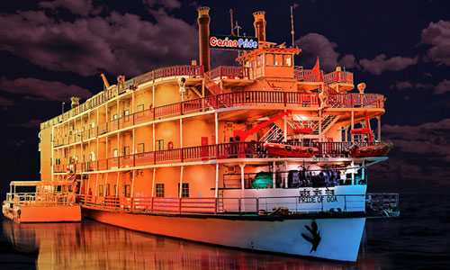

1.Panaji, North Goa
PLACES TO VISIT IN TELANGANA
üòò

ü•∞

location
video
3.Aguada Fort: Beautiful Ambiance
Sightseeing in Goa is incomplete without a visit to Fort Aguada, strategically situated at the estuary of the river Mandovi. On the north side of the fort, a rampart of red-brown laterite just into the bay to form a jetty between two small sandy coves. This picturesque spot is known as Sinquerim Beach.
Location: Fort Aguada Rd, Aguada Fort Area, Candolim, Goa 403515
Timings: 9:00 AM – 6:30 PM all days of the week
Built By: Portuguese
Built-In: 1609-1612
Houses: The Central Jail and a 19th Century Lighthouse
How To Reach: The fort is located on the Aguada-Siolim Road and can be easily reached by road
Entry Fee: No entry fee
ü§©

LOCATION
video
4.Chapora Fort: For Selfie Lovers
Popular for its history, the Chapora Fort is one of the prime tourist attractions of Goa. In recent years, it shot to prominence after the Bollywood movie Dil Chahta Hai was shot here. Perched on a prominent position, one can get sweeping views of all directions from here. This is one of the prime attractions of Goa sightseeing tours.
Location: Chapora Fort Rd, Chapora, Goa 403509
What’s Special? Dil Chahta hai has been shot here! The fort offers picturesque views of the Chapora river uniting with the waters of the Arabian Sea.
Built By: Adil Shah of Bijapur
Built-In: 1617
Nearby Attractions: Vagator Beach and Anjuna Beach
How To Reach: The fort is well-connected and can be easily reached by road
Entry Fee: No entry fee
ü´°

LOCATION
video
5.Calangute Beach
Situated 15 km from Panjim, Calangute Beach is the longest beach in North Goa, stretching from Candolim to Baga. Due to its sheer size and popularity, it is a hub for tourists and backpackers from all over the world.
Popular as the "Queen of Beaches", the Calangute Beach of Goa is among the top ten bathing beaches in the world. Being one of the busiest and most commercial beaches of Goa, it is swarming with eating joints, shacks and clubs serving cocktails, beer and seafood. The Calangute Beach is also known for its water sports activities like parasailing, water surfing, banana ride and jet-skiing.
While the days here are filled with beach fun, nights call for upbeat parties and letting your hair down. Calangute is also popular for staying in Goa as it keeps you well-connected to the other beaches in the north such as Baga, Anjuna, Candolim, Aguada and many more.
Best Time to Visit : After monsoon to enjoy the water sports
Facilities : Changing Rooms are available at a cost of INR 25 per person
Loungers and Sunbeds
Beach Shacks
Water Sports
Two-wheeler and four-wheeler parking
Water Sports Cost (Approx) : Jet Ski: INR 300 for a ride without a professional rider along
Banana Ride: INR 450 per person
Parasailing: INR 1000 (including boating+parachute)
Best Time to Visit : After monsoon to enjoy the water sports
Facilities : Changing Rooms are available at a cost of INR 25 per person
Loungers and Sunbeds
Beach Shacks
Water Sports
Two-wheeler and four-wheeler parking
Water Sports Cost (Approx) : Jet Ski: INR 300 for a ride without a professional rider along
Banana Ride: INR 450 per person
Parasailing: INR 1000 (including boating+parachute)
üò≥

LOCATION
video
6.Cruise in Goa-"A Journey through the Rivers of Goa"
Cruise in Goa allows one to explore the exotic scenery, pristine waters and marvel the breathtaking view of the sunset. There are several types of cruises in Goa ranging from simple evening cruises, elaborate and romantic dinner cruises, backwater cruises, and casino cruises. All of these usually originate from Miramar Beach in Panjim.
Several Goa cruises also offer dinner options along with guaranteed fun and entertainment activities are carried through the day depending upon the daytime, sunset and moonlight. Booking a cruise getaway in Goa is fairly simple as a number of them also offer online booking options. Depending on your requirements and time that you want to spend on the boats, you can choose a package that suits you the best.
Time Required : 1-5 hours
Entry Fee : Varies according to the cruise type and package chosen
üòç

LOCATION
video
7.Arambol Beach
Beautiful and serene, Arambol Beach is among the best beaches of North Goa and is relatively unexploited by tourist activities. Considered to be one of the most spectacular beaches in Goa, Arambol beach has a distinct Bohemian feel to it, which attracts tourists from all over the world.
It is among the northernmost beaches in Goa and is bordered by Keri or Querim beach on one end and Morjim on the other. Arambol Beach is a rocky cum sandy beach blessed with jungles on one end and the sea on the other.
Be it wellness pursuits at a Yoga class on the beach, a drum circle and a weekend beachside market at sunset, a mystical baba on top of a hillock, jumping off a cliff to paraglide or simply strolling about the kitschy market lanes; there is something for every soul in Arambol.
Time Required : 3-4 hours
üòÅ

LOCATION
video
8. Grande Island
This is one of the most popular places in whole Goa for underwater Scuba adventures. Situated in South Goa, this is an alluring exotic island where people come from all over the world to observe the stunning underwater marine life, corals, and reefs. Usually divers with along with their instructors will reach Grande Island through a boat or yacht from the nearest beach which is Bogmalo Beach. Visibility here is one of the best that you can get in Goa. The place has enough shallow waters for newbies and first-time divers.
üòç

LOCATION
video
9. Cotigao Wildlife Sanctuary: Goa’s Second Largest Wildlife Reserve
Noted as Goa’s Second Largest Wildlife Reserve, Cotigao Wildlife Sanctuary may not be the place to see wild animals prowling but you get to see something different. Sloth Bears, Laughing Hyenas and Indian Bisons are a part of the community along with Monkeys and the Malabar Crested Eagle. Find yourself walking in the woods and enjoying the silence that descends on this sanctuary. This is one of the best Goa tourist places.
Location: Canacona Taluka, Khotigao, Goa 403702
Timings: 9:00 AM – 6:30PM all days of the week
How To Reach: You can hire a cab or taxi from Panaji
Distance From Goa: 60 Kms south of Panaji
üòç

LOCATION
video
10. Baga Beach: White Sand Beach
Baga Beach is the centre of tourist attraction in Goa. Majestic white waves rushing to wipe out the feet imprints left by you on the white sand while the wind continues to flirt with the palm trees. Amongst all the activities, parasailing, banana boat rides and sun-basking are highly enjoyed at this beach.
Location: Bardez, Goa
What’s Special: Beach side shacks and cafes which serve you with delectable Goan delicacies and music to soothe your senses. One could indulge in artificial tattoos & braids too.
üòç

LOCATION
video
11.Colva Beach: Largest And Oldest Beach
This beach is located 33 kilometres away from the Panjim Kadamba Bus Stand and is at a distance of 8 kilometers from the Margao Railway Station. This beach of South Goa is considered to be one of the must-visit tourist attractions. This beach is considered to be the largest and oldest amongst the beaches lying in the southern region of Goa and is also counted amongst the best beaches in the entire state.
Location: Colva, Goa
What’s Special: Colva Beach is famous for its pubs and bars and all the party lovers must head to this beach to have a lit night!
üòç

LOCATION
video
12.Aguada Beach: Delightful Views
While Fort Aguada is known to soothe your eyes with delightful views of Aguada beach, it allures the travellers with pristine landscape and the background of ancient citadels. The beach is famous amongst honeymooners.
Location: Fort Aguada Rd, Aguada Fort Area, Candolim, Goa 403515
What’s Special? Do plan a trip to the lighthouse near by. It offers some gorgeous views of the beach from a height.
üòç

LOCATION
video
13.Chorao Island: Largest Island In Goa
Chorao Island is true to its Sanskrit name meaning ‘Stunning Precious Stone’. From being a mere settlement of Portuguese noblemen, this Goan Island has grown into a quaint place nurturing few church and aged villas. Being the Largest Island in Goa, Chorao Island surpasses 16 other islands in attracting visitors which is why it is one of the top Goa tourist places.
Location: Near Panjim, Goa
What’s Special: It is amongst the most tranquil places in Goa
üòç

LOCATION
video
14.Divar Island: Impeccable Beauty
Divar Island is still untouched by commercialization and it has retained much of its originality. This small village reprises the feeling of visiting Goan countryside. Bonderam is a much talked about festival which sees a huge influx of tourists to Divar Island.
Location: Mandovi river, Goa
What’s Special: Situated across the ever-active Mandovi River, it is easily accessible via ferry from near Viceroy’s Arch and is among the best places to visit in Old Goa.
üòç

LOCATION
video
15.Dudhsagar Waterfalls: Enticing Sights
This waterfall is quite famous all over India, owing to the four-leveled falls. Moreover, this is one of the tallest waterfalls in the country. The height of Dudhsagar Waterfalls is 1017 feet and is 100 feet wide (on an average) at the peak. Bhagwan Mahavir Sanctuary is where these falls are lying, almost at the border between Goa and Karnataka. The distance between these falls and Panjim Kadamba Bus Stand is 71 kilometers.
Location: Sonaulim, Goa 403410
What’s Special: This is amongst the most refreshing escapes and is ideal to plan a family picnic
üòç

LOCATION
video
17.Shri Shantadurga Temple: Spiritual Visit
This temple is situated in Kavlem Village, on its foothills. It is one of the biggest and most frequented temples in Goa. As the name suggests, this temple is devoted to Shantadurga – the Goddess of Peace. On a less formal note, the Goddess is also referred to as Santeri. This temple is one of the prominent locations in North Goa.
Location: Kapileswari – Kavlem Rd, Donshiwado, Ponda, Goa 403401
What’s Special: The temple is popular amongst locals
üòç

LOCATION
video
18.Shri Mangeshi Temple: Major Pilgrimage Site
This temple is situated at a distance of 37 kilometres from the Vasco Da Gama Railway Station. This temple is considered to be one of the most prominent attractions in North Goa. It is one of the must-visit places in Goa, as it is a major pilgrimage site here. The temple is also considered to be the largest and richest Hindu shrines in the Indian state of Goa. It is definitely one of the must-visit places in Goa
Location: Dinanath Mangeshkar Rd, Mangeshi Village, Mardol, Goa 403401
What’s Special: This is amongst the prominent religious sites
BAZAR AND MARKETS
üòç

LOCATION
video
1.Mapusa Market: Famous Shopping Destination
Mapusa is one of the many famous shopping destinations in Goa. Just outside Mapusa Municipal Market, you will find an array of stalls enticing you with local goods got by farmers and small entrepreneurs across the state You can shop for several artifacts, clothes, accessories, souvenirs and much more at the market while shopping in Goa.
Location: Mapusa Market Area, Panaji, Goa
Timings: 6 AM – 8 PM
What To Buy: Clothes, accessories, souvenirs
üòç

LOCATION
video
2. Saturday Night Market: Popular Flea Market
This sprawling market is located in Arpora. One can find everything in this market – right from spices to jewellery, unique creations, international designers, vintage items and much more. Apart from that, it hosts live concerts. A lot of hippies frequent this market and sell goodies too. The Saturday night market has featured in Bollywood films too! It is one of the best liveliest getaways for sightseeing in Goa. This is one of the best places in Goa.
Location: Arpora, Goa
Timings: 6 AM – 8 PM
What To Buy: Jewellery, unique creations, international designers, vintage items
üòç

LOCATION
video
3.Anjuna Flea Market: Favourite Hangout Among Backpackers
Apart from the famous Curlies, Anjuna flea market is amongst the most popular tourist places in Goa. The flea market is open only on Wednesdays and offers many things, right from fruits to clothes and accessories to electronic devices. It’s a favourite hangout among hippies and backpackers. While you can find really unique items at this market, give your best shot at bargaining, ‘coz you can avail some great deals!
Location: 10, St. Michael’s Vaddo South, Anjuna, Goa 403509
Timings: October to March: 08:00 AM – 12:00 AM & 12:00 AM – 01:00 AM
What To Buy: Souvenirs
üòç

LOCATION
video
4.Calangute Market Square
Calangute market is all about summer beach clothes. There are numerous beachside shacks and stalls selling funky clothes, trendy beachwear, leather products, seashells, souvenirs, trinkets, footwear, artificial jewellery, carpets, metal crafts, and handicrafts. The market also has shacks serving authentic and lip-smacking Goan delicacies and beer. So get ready to shop till you drop.
Location: Calangute, North Goa
Open on: All the days of the week
What to buy: Trendy beachwear, Trinkets, Seashell and Souvenirs
üòç

LOCATION
video
5.Jade Jagger Beach Boutique
Goa is not just about flea markets but you can also find a dash of class and glamour with designer boutiques like Jade Jagger Beach Boutique. This hut-like boutique is located on Ashwem beach and belongs to British rocker Mick Jagger’s daughter Jade Jagger. Designer Jade’s collection holds gold and silver accessories, signature t-shirts, and flowy dresses. When visiting the store, you can also dash into the classy Jagger’s bar called 1971 which is just next door to the boutique.
Location: Ashwem Beach, North Goa
Open on: Opens only once a year from December to April
What to buy: Apparel and jewellery collection by designer Jade Jagger
üòç

LOCATION
video
6.Mackie’s Night Bazaar
If you are looking forward to enjoying the nightlife in Goa then you must visit Mackie’s night bazaar. This vibrantly lit up market runs every Saturday until midnight on Baga Beach. There are hundreds of stalls selling junk jewellery, trendy beachwear, clothes, souvenirs, antiques, and handicrafts. The marketplace has some amazing eateries serving beer and authentic Goan, Chinese, and Tibetan food. The dazzle of lights from the market and live music is sure to give you an enthralling experience.
Location: Baga-Arpora Road, Baga Beach, North Goa
Open on: Every Saturday Night
What to buy: Trendy beachwear, Souvenirs, and funky jewellery
FOOD ITEMS
üòç

LOCATION
video
1.Thalassa Restaurant: Epicurean’s Delight
One of the most famous restaurants amongst regular Goa tourists, Thalassa offers the perfect sunset view in Goa. Look for a table outside if you want to have the ideal experience at this place. The clear view of the expansive sea makes it certainly worth every penny.
Location: Plot No. 301, 1, Vaddy, Siolim, Goa 403517
Timings: 10:00 AM – 11:30PM all days of the week
How To Reach: The place is well-connected by road
Price For Two: INR 2000
üòç

LOCATION
video
2.The Fisherman’s Wharf: For Seafood Lovers
This place has been attracting crowds for years now. While Salcette offers a ship-like decor and serves delicious tandoori pomfret, masala fried prawns and fish curry rice. Live performances add up to the fun at this beautiful place. On Sundays, you can enjoy the live performances during lunch hours as well.
The view of backwaters make the moments memorable for lifetime. So, next time you are in Goa, don’t forget to add this to your list of places to visit in Goa.
Location: Behind The Leela, Mobor, Cavelossim, Goa
Timings: 9:00 AM – 6:30PM all days of the week
How To Reach: The place is well-connected by road
Price For Two: INR 1500
üòç

LOCATION
video
3.Anteras, Vagator: Sun-kissed Meals
Antares is a place to be if you are looking for some serenity while overlooking the beach. Have a sun-kissed meal and wait till the sunset for an experience of its kind. You can pick anything from their authentic delicacies and you will not regret for the fact that their staff pours in immense creativity and dedication in each dish they serve.
Location: Small Vagator Beach, Ozran, Vagator, Goa
Timings: 9:00 AM – 6:30PM all days of the week
How To Reach: The place is well-connected by road
Price For Two: INR 2000
üòç

LOCATION
video
4.Tamarind Café, North Goa
We thought we would start off with the healthier quick-bites option. Tucked away in Arambol is this food paradise which serves delicious quick eats for the snacking buffs. Set in a garden under a 200-year old banyan tree is this beautiful and cozy café. The most inspirational dishes are dished out here by the Japanese chef who makes you indulge in some great food made from the local produce and the freshest of ingredients. The macrobiotic meal options for breakfast, lunch, and dinner include delish soups, salads, and mains made with generous quantities of imported olive oil, ghee, and veggies.
Location: Varchawadda, Arambol, North Goa
Timings: 08:00 am to 11:00 pm; every day
Must-try Items: Healthy Options, Salads, Chinese, Thai
Average Cost for Two: ₹ 400
üòç

LOCATION
video
5.La Plage, North Goa
Let us warn you at the outset, nine out of ten people are reported to have fallen in love with this place at the very first sight. French, Italian, and contemporary American grub is served in the most desirable ways here. The most eclectic ambiance accented by colored wooden furniture with the backdrop of the pristine Aswem Beach and the most appetizing delights are bound to keep you coming back for more. This casual dining place keeps changing the menu while keeping some staples unchanged. You get one of the best Bee Burgers in town in La Plage and you can expect some spectacular seafood to be served at your table as well. Décor, location, service or food quality, the place scores high on all these counts and many more. No wonder, this restaurant tops the list of North Goa’s must-try restaurants.
Location: Aswem Beach, Arambol, North Goa
Timings: 08:30 am to 10.00 pm; every day
Must-try Items: Burgers, Sea Food, Chocolate Thali, Cocktails, Chicken Burger, Salad, Beef Carpaccio
Average Cost for Two: ₹ 800
üòç

LOCATION
video
6.Martin’s Corner, South Goa
The classy interiors at Martin’s Corner are welcoming and cozy for a multi-cuisine dining extravaganza. The bar scene at the venue is pretty happening with the best of concoctions being served in-house. The live music and the delectable offerings from the local, Chinese, and North Indian cuisines at this food joint are nothing less than spectacular to make your Goan adventure complete. The stone-cooked steaks served here are top-notch, making this a definite stopover for sensory gratification. Pork chilli fry, Calamari masala, king prawn butter garlic, mousses, cheesecakes, and the list goes on and on. Choose your favorites and indulge, as if there is no tomorrow!
Location: Ranvaddo, Salcete, Betalbatim, South Goa
Timings: 11:00 am to 04:00 pm and 06:30 pm to 11:30 pm; every day
Must-try Items: Mocktails, Steak, Sea Food, Paneer Tikka, Cocktails, Dutch Truffle, Fish, Roti
Average Cost for Two: ₹ 1600
üòç

LOCATION
video
7.Dropadi, South Goa
Sun, sand, and cocktails with some great food can set the mood for a romantic date. And Dropadi is just the place for it with the serene shores in the background and the fine wine and delectable snacks it serves. Indulge in their amazing seafood platter (made from the fresh catch, needless to say) while being tucked away from the hustle and bustle of the coastal city. The picturesque backdrop and piquant meals are like the icing on the cake, especially when you are on a great Goan holiday! Click also places to visit in Goa, Night
Location: Palolem Beach, South Goa
Timings: 12:00 pm to 10:30 pm; every day
Must-try Items: Butter Garlic Prawns, Sea Food Platter, Paneer Tikka Masala, Salads, Virgin Mojito, Cocktails, Lobster
Average Cost for Two: ₹ 800
üòç

LOCATION
video
8.Magic Italy, South Goa
Find a little bit of Italy in this cozy eatery that serves the most authentic pizzas, pasta, ravioli, and much more with a local spin. This Pizzeria has its ingredients specially imported from Italy for the supreme rendition of the classic dishes, especially the wood-fired pizzas. The buzzing atmosphere and the comfy seating give you a divine slice of Naples, with the wafting aromas of garlic and olive oil. Heavenly, isn’t it?
Location: Palolem Road, Palolem, South Goa
Timings: 09:30 am to 11:00 pm; every day
Must-try Items: Bruschettas, Pasta, Tiramisu, Salads, Ravioli, Pepperoni Pizza
Average Cost for Two: ₹ 800